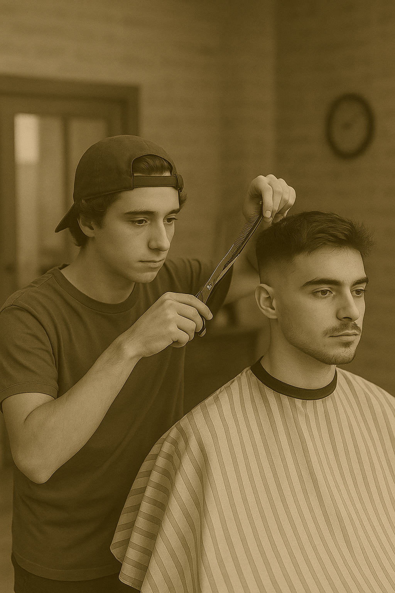

Sobre Nos
A Barbearia Arte Corte nasceu em 2020, em meio à pandemia, fruto da união de amigos apaixonados por cortes de cabelo. Com as barbearias tradicionais fechadas, eles criaram um espaço acolhedor e estiloso, oferecendo atendimentos ao ar livre para respeitar o distanciamento social. O que começou como uma alternativa criativa logo se transformou em um ponto de encontro animado, onde vizinhos e amigos compartilhavam histórias, risadas e bons momentos.
Com o passar do tempo, a barbearia conquistou a confiança da comunidade e expandiu seus serviços, incluindo cuidados com a barba e tratamentos capilares. Indo além do visual, o espaço passou a acolher exposições de artistas locais, fortalecendo laços culturais e atraindo novos públicos.Hoje, a Barbearia Arte Corte é muito mais do que um salão — é um ambiente vibrante que celebra a amizade, a criatividade e a resiliência. Um verdadeiro símbolo de como boas ideias e conexões humanas podem transformar desafios em oportunidades.
Satisfação Garantida
Profissionais Certificados